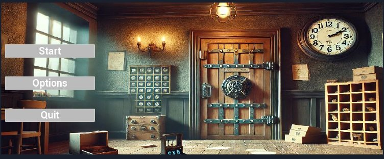

Magic School
1인칭 방탈출 퍼즐, 완성
단서를 모아 마법학교의 방을 하나씩 빠져나가는 방탈출 게임입니다. 2인 팀의 팀장으로 기획을 함께 하면서, 잡기와 회전, 인벤토리, 이펙트와 UI를 블루프린트로 만들었습니다.
- 내 역할
- 팀장, 기획과 시스템
- 팀
- 2인 (YUJINS STUDIO)
- 기간
- 1개월, 완성
- 엔진
- Unreal Engine 5, Blueprint
시연 영상, YouTube

YouTube에서 시연 영상 보기직접 해 보기
게임의 인벤토리 규칙을 옮긴 데모입니다. 같은 아이템은 한 칸에 쌓이고, 칸을 고른 뒤 다른 칸을 누르면 옮기거나 합칩니다.
BPC_Inventory, 인벤토리 6칸
게임 흐름
- 장르
- 실세계와 판타지가 섞인 방탈출
- 시점
- 1인칭으로 현실적인 몰입감
- 퍼즐
- 단서를 모아 문제 해결
캐릭터 구조와 잡기
ACharacter→MagicSchoolCharacter+CharacterMovementPhysicsHandleBPC_InteractionBPC_Inventory
이동은 CharacterMovement, 물체 잡기는 PhysicsHandle에 맡기고, 상호작용과 인벤토리는 직접 만든 액터 컴포넌트로 나눴습니다.
잡기와 놓기
ThrowObject인터페이스를 가진 오브젝트만 잡을 수 있습니다.- 오른쪽 클릭으로 잡으면 오브젝트가 플레이어 앞 5m에 놓입니다.
- 버튼을 누르는 동안에만 유지되고, 떼면 중력을 받아 떨어집니다.
오브젝트 회전
- 잡고 있을 때만 쓸 수 있습니다.
- 회전 키를 누르면
Player.RotatingObject게임플레이 태그를 붙여 회전 상태임을 표시합니다. - 그 상태에서 마우스를 움직이면 오브젝트가 축을 따라 회전합니다.
인벤토리 블루프린트
아이템 추가
- 인벤토리의 빈 슬롯을 확인합니다.
- DB에 등록된 아이템인지 확인합니다.
- 같은 아이템이면 스택을 1 늘리고, 칸이 차 있으면 다음 칸에 넣습니다.
아이템 버리기
- 슬롯의 아이템 데이터를 확인합니다.
- 캐릭터에 지정한 위치에 아이템을 스폰하고 물리를 켭니다.
- 스택을 1 줄이고, 0이 되면 빈 칸으로 바꿉니다.
아이템 이동
- 옮길 슬롯과 대상 슬롯의 아이템을 확인합니다.
- 같은 아이템이면 대상 스택을 늘리고 원래 칸을 비웁니다.
- 다른 아이템이면 아이템과 수량을 옮기고 원래 칸을 비웁니다.
퍼즐과 이펙트
게임 기믹
액터별 상호작용과 주변 사물로 힌트를 주고, 모은 힌트로 퍼즐을 풀어 탈출하도록 설계했습니다.
자물쇠
실제 방탈출 같은 자물쇠 에셋을 플레이어와 상호작용하도록 로직을 고쳐 적용하고, 조작키를 알려 주는 UI를 만들었습니다.
- 기존 나이아가라 이펙트를 바탕으로 수정했습니다.
- 상호작용할 때 이펙트로 신비로운 느낌을 줍니다.
- 나이아가라에 머티리얼을 입혀 판타지 요소를 강조했습니다.
- 옛스러운 소품과 은은한 주황빛 조명으로 마법학교 분위기를 냈습니다.
- 물건을 다른 액터 위에 올렸을 때 자연스럽게 놓이도록 스태틱 메시 콜리전을 수정했습니다.
화면 구성
인트로, 로딩, 옵션, 일시정지, 엔딩 화면을 위젯으로 만들었습니다. 엔딩 화면에는 남은 시간을 보여 줍니다.
역할 분담
- 팀장, 기획과 시스템
- 김진호콘텐츠 기획, 잡기와 회전, 상호작용, 인벤토리, 나이아가라 이펙트, 타이머
- 기획과 아트
- 이유정콘텐츠 기획, 에셋 모델링과 편집, 상호작용 기능, 이펙트, 게임 내 맵